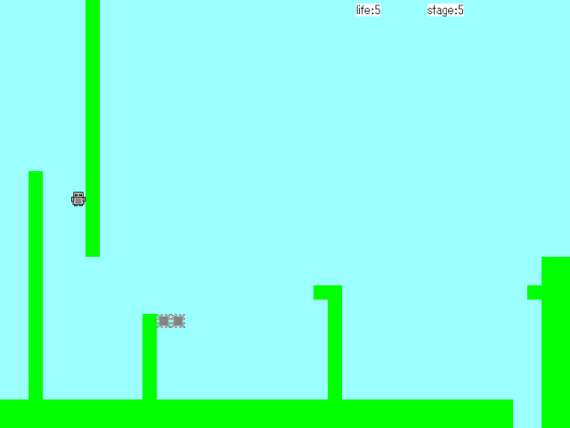

灘校パソコン研究部

プログラム等紹介
これまでに部員が制作したプログラム等を紹介します。なおこのページに掲載されている全てのコンテンツの利用に関しましては 利用規約をご覧ください。
2021年度文化祭

NPCA国の都市にて警察になったり、テロ組織の一員になったりして都市を走り回るゲームです。だいぶ高難易度&壁の判定がシビアですががんばってください。 |
2018年度文化祭
|
FPSゲームです。真ん中あたりにいる紫のボスを倒しましょう。外にあるBOXに入ると(緑色の光)HPを回復できます。裏ゴールがあるかもしれません |

ペンギンをジャンプさせて障害物を避けるゲームです。 |
2017年度文化祭

緑の丸を操作してゴールを目指す、単純な迷路です。 |
モグラ叩きならぬセルリアン叩きです。画面に出てくるセルリアンを叩いてやっつけてください。 |
2015年度文化祭
一括ダウンロード|
シンプルな神経衰弱です |

ブラウザ上で動くオセロです。(インストールはパソコンに詳しい人向けとなっております。) |
エレベーターで屋上に向かうゲームです。 |
2014年度文化祭
一括ダウンロード

えさを求めて迫りくる巨大な豚を大砲で駆逐して食料を得るゲーム |

自転車でできるだけ遠くまで壁にぶつからずに走るゲーム |
話題沸騰の「量子将棋」と簡潔で美しい「どうぶつしょうぎ」を組み合わせたゲーム |

重力を自由に操れるアクションゲーム |

電気自動車を運転し、進んだ距離を競うゲーム |
2013年度文化祭
一括ダウンロード

空から落ちてくるApple製品を拾うゲーム |

条件にあった3つ組をみつける、簡単そうで難しい、奥の深いカードゲーム |

ステージがランダムに生成されるパックマン |

ジャンプし続けるボールを操作してゴールに導くゲーム |
加速する球を操作して相手を倒すゲーム。20年前のレトロゲームの復刻版 |
絵 作者：十馬力 a.k.a. 全人類の緋想天 |
2011年度文化祭
一括ダウンロード

太平洋戦争をモチーフにしたシューティングゲーム |

毎年恒例の弾幕系シューティングゲーム |
反射するビームを使って敵を倒すゲーム |

UFOを倒すシューティングゲーム |
ジャンプする主人公をゴールまで導くアクションゲーム |
毎年恒例の弾幕系シューティングゲーム |

丸い主人公をゴールまで導くアクションゲーム |
2010年度文化祭
|
去年(2009)のThermoBallの続編 ステージ増量 |
周りからやってくる大腸菌を倒しながら生き残るシューティングゲーム |
アヒルを操作しながら敵艦隊を撃退するシューティングゲーム |
2009年度文化祭
|
温度によって速度の変わる正方形を操作してゴールに導くゲーム |
山道や崖をできるだけ早く車で走り抜けるゲーム ランキング機能付き |

四方向からボールを跳ね返せる、進化したブロックくずしゲーム |
2008年度文化祭
|
割と有名なあのゲームに似ている全く無関係な数字を埋めていくゲーム。 |
かの有名なボードゲーム、チェッカー |
2006年度文化祭
|
猿が迫りくる弾幕と戦うゲーム |
一風変わったカードゲーム |
2005年度文化祭
|
毎年恒例の弾幕ゲーム |
2004年度文化祭
|

ロボットを操作してゴールまで導くゲーム |
迫りくる弾幕をよけながら進むゲーム |
ライフを減らさないようにゴールを目指すゲーム |
|
ウィンドウを透過したりコントロールするソフトウェア |